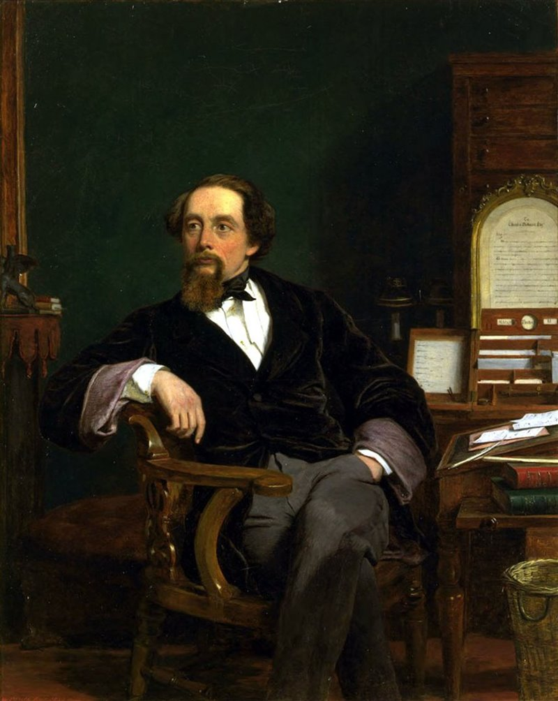
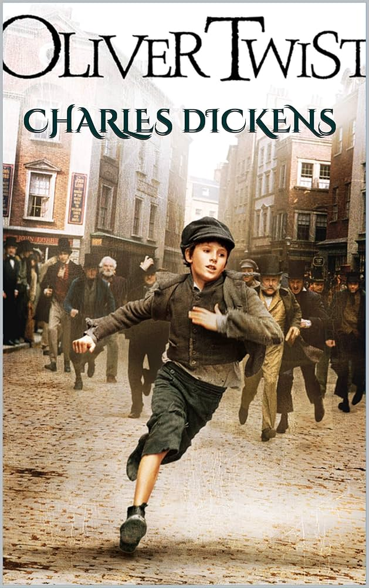

English Language
Charles Dickens and His Literary Vision
Charles Dickens is one of the most prolific writers of the early Victorian era. His childhood poverty had a profound effect on him and his writing, giving him an acute sensitivity towards his environment, his age, and its people. This difficult upbringing provided him with first-hand knowledge of the darker side of the Victorian age, which he later transformed into material for his work. Through his novels, he created unforgettable characters and blatantly exposed the inhumanities of his day, ensuring that in his tales, good would always overcome evil.

Early Life and Hardships
Charles Dickens was born in Hampshire, in the south of England. At the age of 12, he was sent to work twelve hours a day in a factory. His education up to this moment had been scarce, but the factory owner, a friend of his father, took pity on him and gave him some private tuition.
Soon after, his father's financial situation deteriorated so much that the family was sent to prison due to unpaid debts. The situation improved only when Dickens's grandmother died and left the family a small inheritance, which helped clear their debts and secure their release.
The Significance of Oliver Twist
The most important work of the writer is Oliver Twist. It is highly significant because it is the first novel in the English language to focus on a child protagonist. The novel exposes the grim reality of workhouses and the exploitation of children, both as a cheap form of labour and as criminals. Extreme poverty, hunger, and blackmail are all major elements in this tale, intertwined with the constant fear that accompanies Oliver right to the end.

The story of Oliver Twist
Trascina la barra azzurra qui sotto o scorri per vedere tutti i fotogrammi della storia

The Workhouse: Oliver is born in a parish workhouse where orphans are mistreated and starved.

The Famous Request: After drawing straws with the other hungry boys, Oliver famously asks the cook for more food: "Please, sir, I want some more."

The Escape: Punished for his rebellion, he is sold to an undertaker. After being bullied and mistreated, Oliver runs away and walks all the way to London.

The London Gang: He runs away to London, where he is tricked into joining a gang of young pickpockets led by the criminal Fagin and the Artful Dodger.

Rescue and Recapture: A wealthy man named Mr. Brownlow rescues Oliver from the streets, but Fagin’s gang kidnaps him back to protect their secrets.

The Plot Thickens: Oliver is forced into a burglary where he is wounded. A kind family, the Maylies, takes him in, while a mysterious man named Monks plots with Fagin to ruin Oliver.

The Truth and Justice: It is revealed that Monks is Oliver's half-brother trying to steal his inheritance. The criminals are caught or killed, and Oliver is happily adopted by Mr. Brownlow.